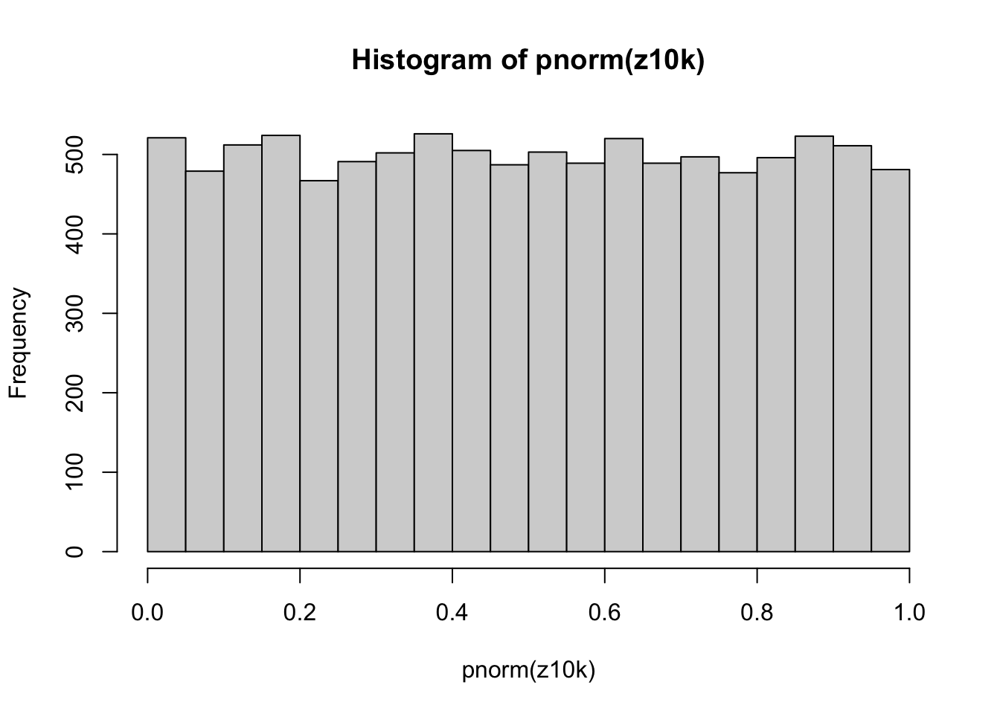
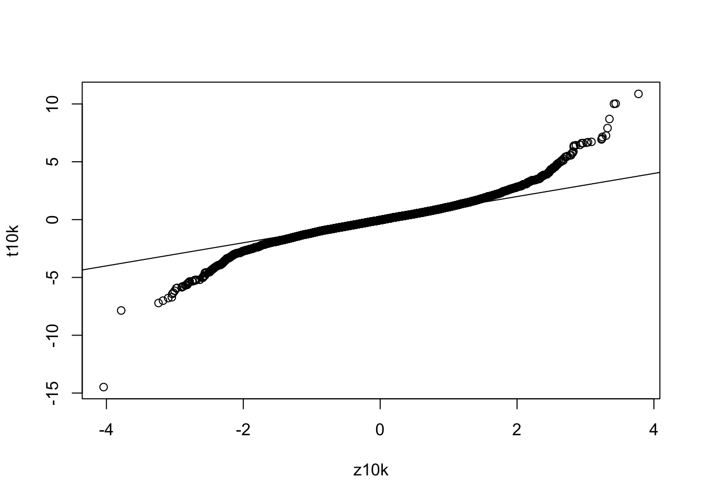
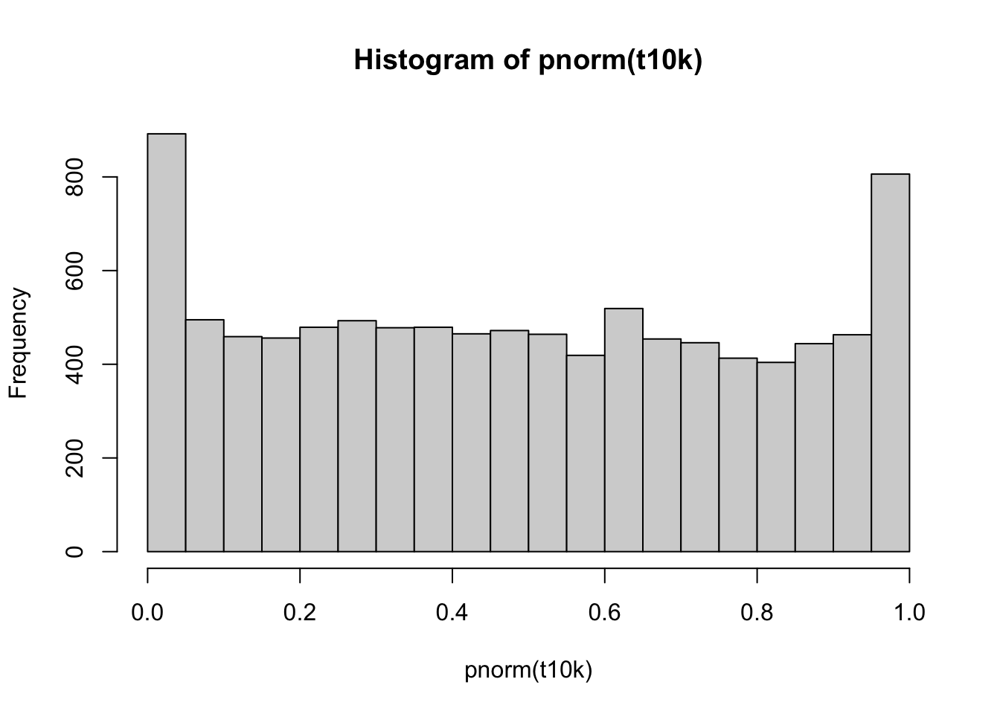
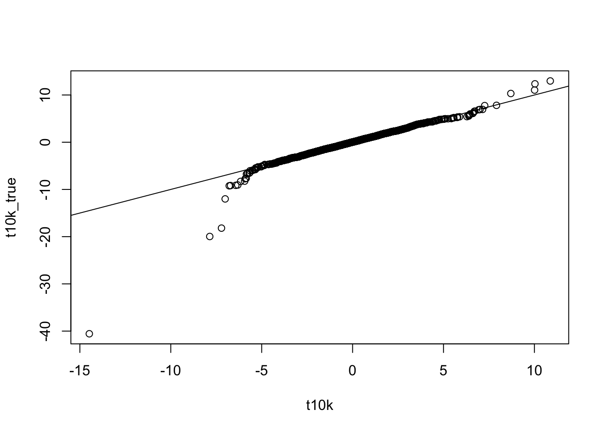
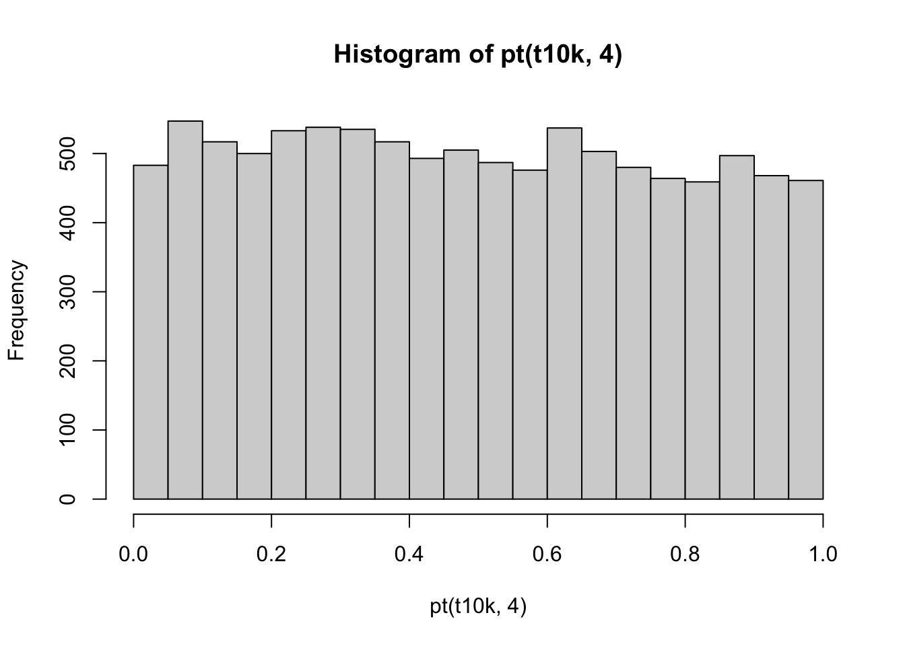

In this experiment, we assume that the measurment xi is drawn from the standard normal distribution N(0, 1) under the null hypothesis. We will draw numbers from the null distribution, compute z and t, and analyze if they follow the same distribution. As a warmup exercise, we start by experimenting with the z-score:
x5=rnorm(5)
sqrt(length(x5)) * mean(x5)## [1] 0.9090849zf that takes a vector x as input and computes
the z score (Hint: zf = function(x) {…} and use the code from question
1). Check so zf(x5) gives the same answer as in the first question. It
is a good coding strategy to start with a concrete example and then
write a general function building on this experience.zf = function(x) { sqrt(length(x)) * mean(x)}
zf(x5)## [1] 0.9090849The function should show the same value as above in question 1.
z10k = replicate(10000,zf(rnorm(5)))hist(pnorm(z10k))
2 Histogram of pnorm(z10k) pnorm(z10k) Frequency 0.0 0.2 0.4 0.6 0.8 1.0 0 100 200 300 400 500 mean(pnorm(z10k)<0.05) ## [1] 0.0488 If you draw numbers from a continous distribution (for example using rnorm) and compute the lower cumulative p-value according to the same distribution (for example using pnorm), then the p-values will be uniformly distributed. pnorm(z10k)<0.05 is TRUE for the entries in z10k with values belonging to the bottom 5% tail of N(0, 1). Since the values in z10k follow N(0, 1) this should happen 5% of the time. The fact that we observe this, and the uniform histogram, means that we are computing the p-values for ¯x correctly.
We will now repeat question 1-4 but for the t statistic:
sqrt(length(x5)) * mean(x5) / sd(x5)## [1] 0.6725887tf that computes the value of t
for an a arbritrary vector x. Test that tf(x5) reproducese the answer in
question 5.tf = function(x) { sqrt(length(x)) * mean(x) / sd(x) }
tf(x5)## [1] 0.6725887The function should have computed the same value.
t10k = replicate(10000,tf(rnorm(5)))qqplot(z10k, t10k)
abline(0,1)
The values in z10k and t10k do not follow the same distribution. The more extreme quantiles in t10k have larger absolute values than the corresponding quantiles in z10k. This means that the values in t10k follow a distribution with fatter tails.
hist(pnorm(t10k))
mean(pnorm(t10k)<0.05)## [1] 0.0892In the in the introduction we hoped that t would follow the same distribution as z, that is N(0, 1) (we only cheated a little bit when we replaced with s after all). If this was the case, we would expect 5% of the p-values to be below 0.05 (as in question 4). However, we observe more values below 0.05 since the t does not follow the normal distribution.
If we did not realize that it was a mistake to think that t follows N(0, 1), we would have interpreted the excess of values around 0 as statistically significant event. Given that all the numbers were generated according to the null hypothesis, our (incorrect) calcualtion would therefore have generated more than 5% false positives meaning that the test was liberal. Given that the true variance often it unkown, it would be nice if we could use the t-statisic for hypothesis testing (since then s can be computed form the data but z cannot). Statisticians have defined the Student’s t-distribution so that the t-statistic follows it.
The t distribution depends on the number of data points used to compute ¯x and s. To understand this, recall that the reason t does not follow N(0, 1) is that random errors perturb s. These errors are large when few data points are used (above we used only five), so the t-distribution and the normal distribution will differ significantly in this case. Conversely, s will be close to if many datapoints are used, meaning that t will be very close to z and, thus, that the t-distribution and the normal distribution will be similar.
In R, the functions for manipulating the t-distribution have the same naming convention as the normal distribution: 5 Task Normal Distribution t(distribution) Computes probability density dnorm(z) dt(t,df) Computes cumulative probability pnorm(z) pt(t,df) Computes quantiles given p qnorm(p) qt(p,df) Generates n random values rnorm(n) rt(n,df) Note that the t-distribution functions need one additional parameter df that specifies to the “number of degrees of freedom”. This corresponds to how many data points were used to estimate s, which, for technical reasons, is less than the number of data points.
t10k_true=rt(10000,4)
qqplot(t10k, t10k_true)
abline(0,1)
The points follow the diagonal (except for the scattering at the ends), meaning that t10k_true and t10k follow the same distribution
hist(pt(t10k,4))
The p-values are uniformly distributed. Given that the values that t10k were computed from were generated according to the null hypothesis, this means that we are coomputing the p-values correctly.